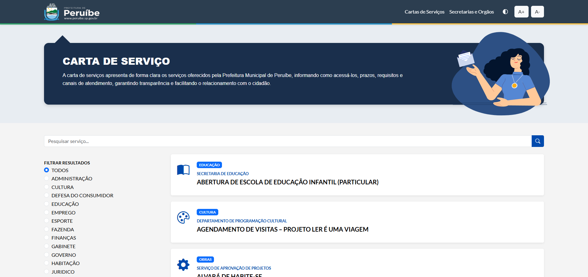
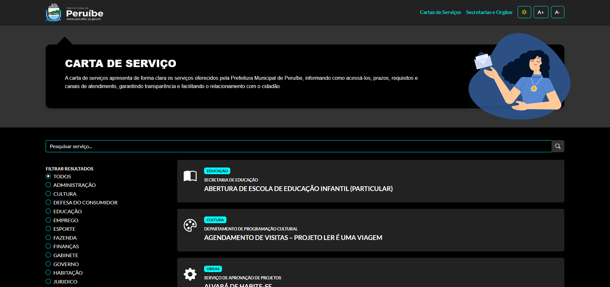
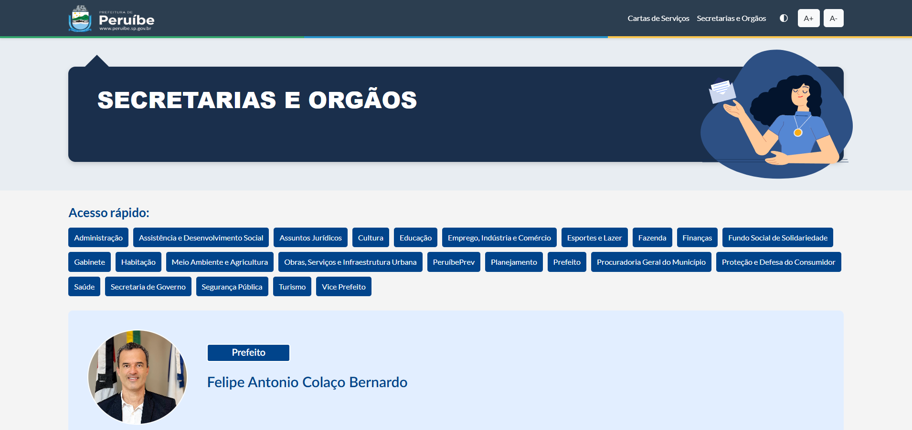
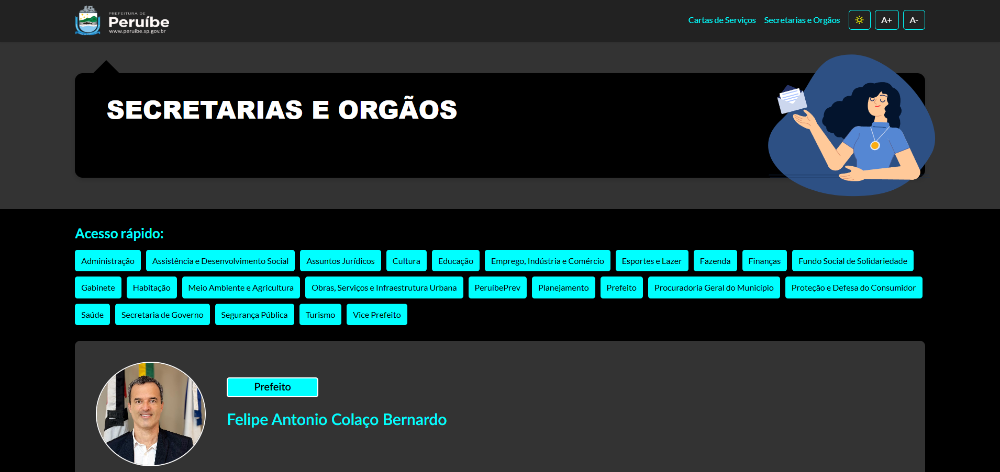
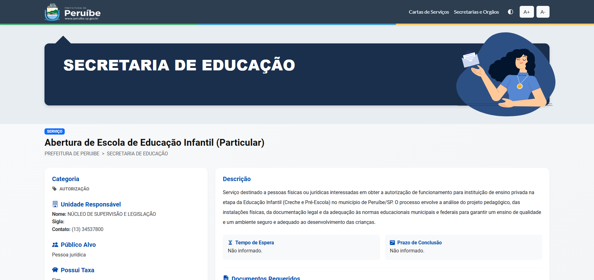

Case 02 · Governo digital
Portal de Serviços de Peruíbe
Acesso rápido a cartas de serviço, secretarias e informações públicas em uma interface clara e inclusiva.

Visão geral
Informação municipal útil, organizada em poucos passos.
O Portal de Serviços foi criado para facilitar o acesso dos munícipes às cartas de serviço, secretarias e órgãos da Prefeitura de Peruíbe. A navegação foi estruturada para reduzir o esforço de busca e apresentar cada informação com clareza.
Acesso e inclusão
O projeto oferece layout responsivo e uma opção de alto contraste, ampliando a legibilidade e o acesso às informações públicas em diferentes dispositivos e necessidades de uso.
Atualização simplificada
Um sistema interno permite que a equipe responsável mantenha serviços, secretarias e conteúdos atualizados de maneira prática e segura.
Interface
Consistência visual com acessibilidade integrada.
Exemplos de navegação, alto contraste e páginas detalhadas do portal.




